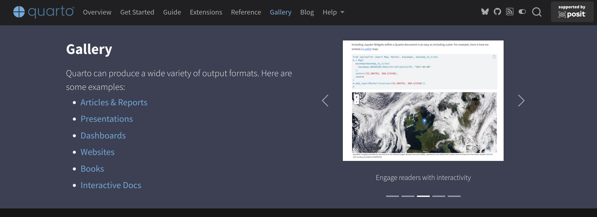
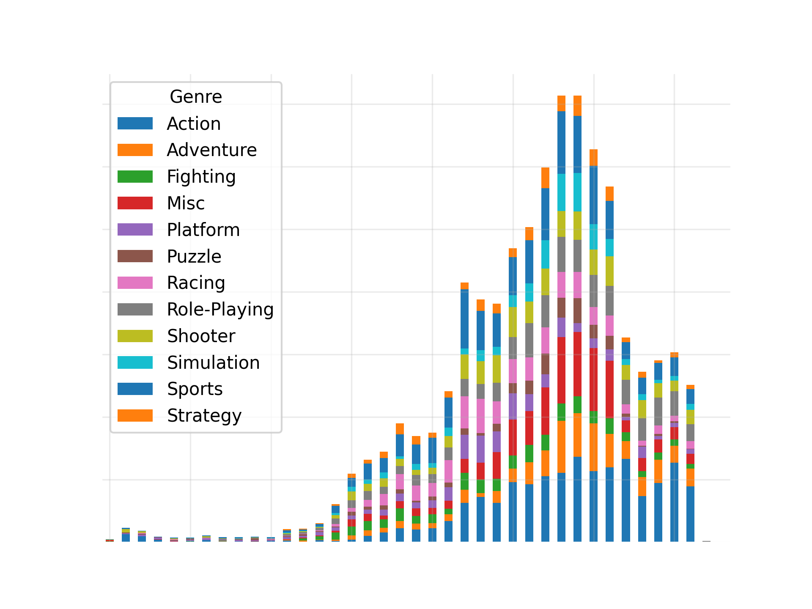
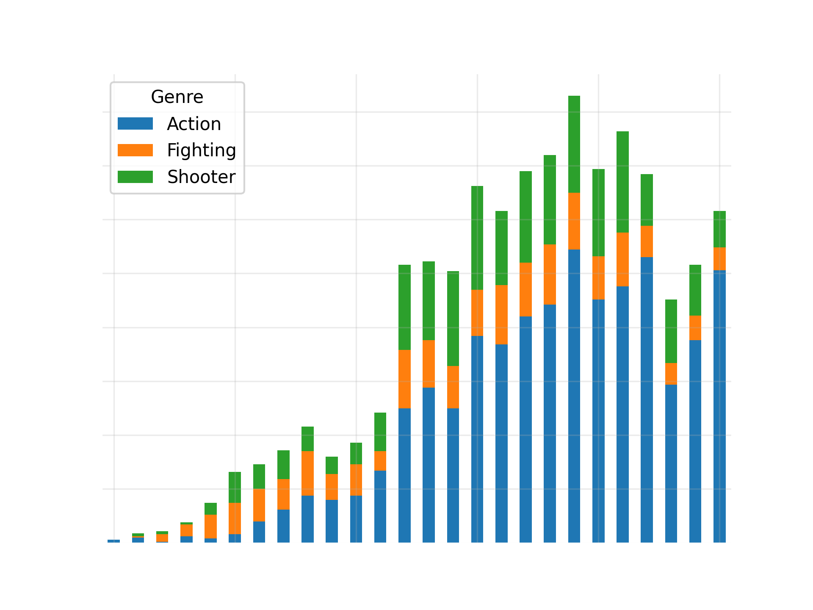
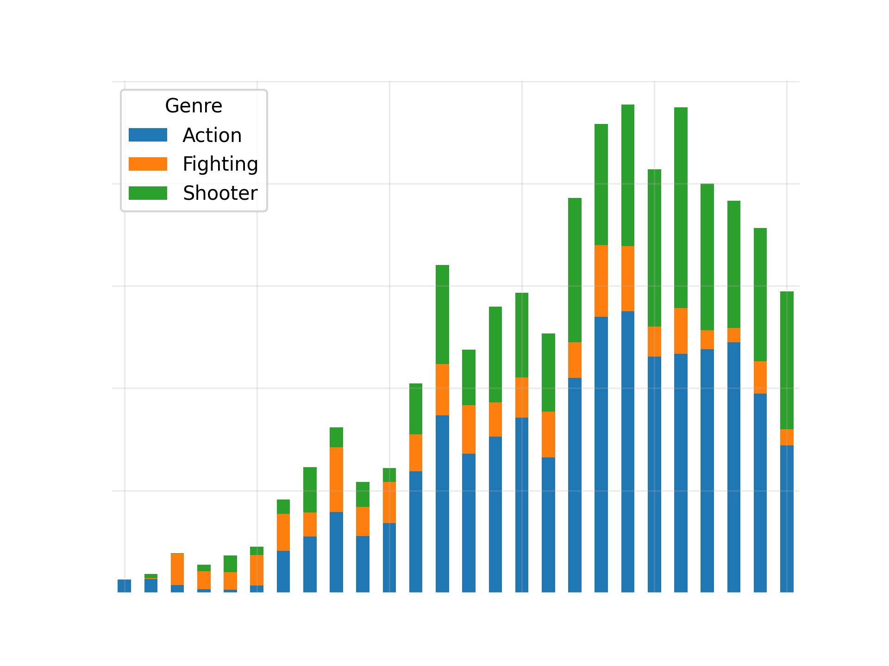
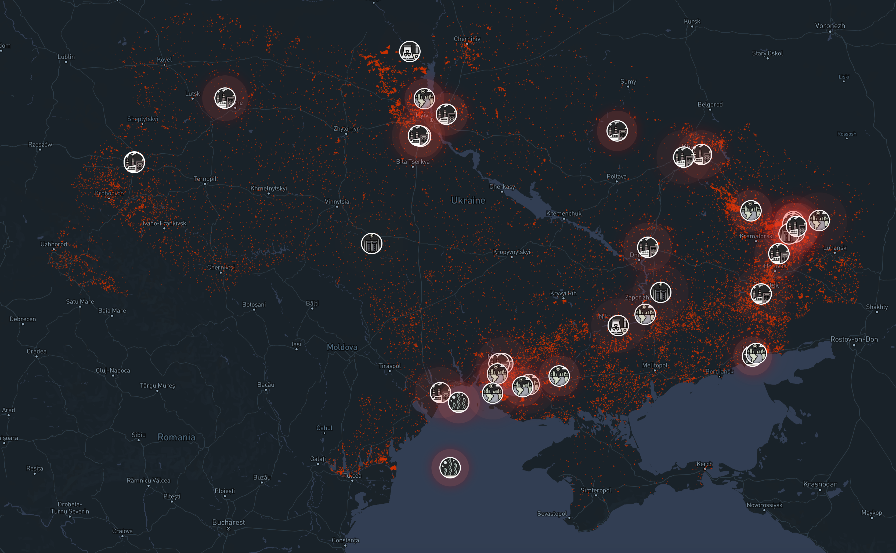

Introduction au Big Data
Jusqu’ici, on a appris à :
👉 En entreprise, ce n’est pas suffisant.
Une bonne analyse doit survivre au temps, aux collègues et aux décisions.
Comment concevoir une analyse de données
qui reste valable, compréhensible et utile
au-delà du notebook et de la personne
qui l’a produite ?
Trois exigences :
Dans un cours, on vise souvent : “le bon résultat”.
En entreprise, on vise plutôt :
Un raisonnement stable + des décisions discutables + un livrable réutilisable
L’abstract
Ce que c’est, à quoi ça sert
Ah zut, non là c’est de l’abstrait
En réalité, les mots “abstract” (anglais) et “abstrait” (français) ont la même provenance latine
abstrahere, qui signifie “tirer hors de”, “extraire”.
Et, mine de rien, c’est un truc important
Doit synthétiser la question initiale le raisonnement suivi et la conclusion de l’analyse.
Il résume le parcours, le chemin parcouru.
S’écrit à la fin quand tout est fini !
Evite la découverte petit à petit de voter cheminement surcharge cognitive non nécessaire
Abstract
Introduction / question
Données
Analyse
Résultats
Conclusion
D’abord le plus commun…
WYSIWYG
(What You See Is What You Get)
WYSIWYG
Les méthodes codées

Le Big Data désigne l’ensemble des technologies, méthodes et infrastructures permettant de collecter, stocker et analyser des volumes très importants de données. Avec la généralisation d’Internet, des smartphones, des capteurs et des plateformes numériques, la quantité de données produites chaque jour a explosé. Ces données proviennent de sources très variées : réseaux sociaux, transactions en ligne, objets connectés, systèmes industriels ou encore images et vidéos. Le Big Data se caractérise généralement par les “3 V” : volume, variété et vélocité. Le volume correspond à la quantité massive de données générées, souvent mesurée en téraoctets ou en pétaoctets. La variété renvoie à la diversité des formats de données, qui peuvent être structurées, semi-structurées ou non structurées. Enfin, la vélocité décrit la vitesse à laquelle ces données sont produites et doivent être traitées.
Pour exploiter ces données, des architectures informatiques spécifiques ont été développées, reposant souvent sur des systèmes distribués capables de répartir les calculs sur de nombreux serveurs. Des outils comme Hadoop ou Spark permettent ainsi de traiter efficacement de très grands ensembles de données. L’analyse du Big Data ouvre de nombreuses perspectives dans des domaines variés : marketing, santé, transport, finance ou recherche scientifique.
Moi non plus
(charge cognitif trop grande)
indentations
Le Big Data désigne l’ensemble des technologies, méthodes et infrastructures permettant de collecter, stocker et analyser des volumes très importants de données.
Avec la généralisation d’Internet, des smartphones, des capteurs et des plateformes numériques, la quantité de données produites chaque jour a explosé. Ces données proviennent de sources très variées : réseaux sociaux, transactions en ligne, objets connectés, systèmes industriels ou encore images et vidéos.
Le Big Data se caractérise généralement par les “3 V” : volume, variété et vélocité. Le volume correspond à la quantité massive de données générées, souvent mesurée en téraoctets ou en pétaoctets.
La variété renvoie à la diversité des formats de données, qui peuvent être structurées, semi-structurées ou non structurées. Enfin, la vélocité décrit la vitesse à laquelle ces données sont produites et doivent être traitées.(et aux espaces entre les paragraphes !)
Faites attention
au full bullet point
Une question claire
Une figure = une idée
Interpréter et prendre du recul
Une analyse n’est pas une collection de graphiques,
c’est un raisonnement appuyé par des données.
correcte peut échouer en situation professionnelle ?Vous rendez votre analyse.
Six mois plus tard :
👉 Personne n’ose toucher à votre notebook / code.
Ce qui échoue n’est pas le code.
Ce qui échoue, c’est
la transmission du raisonnement.
Une analyse professionnelle doit :
L’analyse devient un objet collectif.
Une analyse n’est pas un résultat, c’est un support de décision.
Elle doit expliciter ce qu’on peut conclure… et ce qu’on ne peut pas.
direction: right
style: {
fill: transparent
}
bloc_1: {
shape: rectangle
label: "Données\n(incomplètes)"
width: 175
height: 100
style: {
fill: "#d5d5d5"
stroke: "#fff"
}
}
bloc_2: {
shape: rectangle
label: "Analyse\n(sous hypothèses)"
width: 175
height: 100
style: {
fill: "#d5d5d5"
stroke: "#fff"
}
}
bloc_3: {
shape: rectangle
label: "Recommandations\nconditionnelles"
width: 175
height: 100
style: {
fill: "#d5d5d5"
stroke: "#fff"
}
}
bloc_4: {
shape: rectangle
label: "Décisions humaines"
width: 175
height: 100
style: {
fill: "#d5d5d5"
stroke: "#fff"
}
}
bloc_1 -> bloc_2: {
style: {
stroke: "#fff"
font-color: "#fff"
stroke-width: 2
}
}
bloc_2 -> bloc_3: {
style: {
stroke: "#fff"
font-color: "#fff"
stroke-width: 2
}
}
bloc_3 -> bloc_4: {
style: {
stroke: "#fff"
font-color: "#fff"
stroke-width: 2
}
}👉 L’analyse n’automatise pas la décision.
👉 Un chiffre sans hypothèses = un risque.
Trois éléments oubliés :
Sinon :
👉 le message se perd
Un autre doit pouvoir répondre à :
La valeur d’une analyse ne dépend pas de :
Elle dépend de la clarté du message transmis.
Une synthèse tient souvent sur une slide décision :
👉 Tout le reste est en annexe.
Conclusion : “L’indicateur X augmente sur 12 mois.”
Faits :
Limites : résultat sensible au paramètre Y.
Une analyse de données est une enquête.
Une bonne question est :
Exemples :
❌ “Les réseaux sociaux sont-ils mauvais ?”
✔️ “Le temps passé sur Instagram est-il corrélé au sommeil chez les étudiants ?”
Avec le temps :
👉 Une analyse figée devient fausse.
Une analyse robuste ne “prouve” pas.
Elle montre que la conclusion tient dans une plage raisonnable de scénarios.
Changer un paramètre important.
Si la conclusion bascule :
👉 le résultat est fragile.
👉 Une analyse devient un outil de discussion.
Une bonne analyse :
👉 elle ne remplace jamais la décision humaine.
Une analyse robuste n’est pas figée
elle est paramétrée.
Ventes de jeux videos de 1990 à 2016
Pour chaque jeu répertorié on a :
Taux d’homicide en France de 1990 à 2021
Pour chaque année on a :
le taux d’homicide pour 100 000 habitants
variant globalement entre 1 et 3

Taux d’homicide en France pour 100 000 habitants

Fréquence de publication des jeux selon l’année et le genre

Fréquence de publication des jeux

Fréquence de publication des jeux pondérée par leur vente

Modélisation par ajustement polynomial de la ventes de jeux d’action

Comparaison vente de jeux d’action vs taux d’homicide
-0.68
Le coefficient de corrélation est une mesure statistique qui indique la force et le sens du lien entre deux variables.
Nous avons trouvé :
\[ r = -0.68 \]
Cela indique une corrélation négative modérée à forte :
Le résultat obtenu ne constitue pas une preuve certaine.
Plusieurs limites importantes doivent être prises en compte dans cette analyse :
Une corrélation observée, mais aucune causalité démontrée.
La position la plus courante aujourd’hui est :
Certaines études observent aussi une corrélation négative entre jeux vidéo et criminalité, mais la recherche actuelle ne montre aucun lien causal clair entre jeux vidéo et violence réelle.
IA, non ?et par là, un formidable outil pour le data scientist
Mais
L’humain, ingénieur ou juste citoyen, reste maître de l’information.
L’IA produit des réponses.
Mais
Mais seul l’humain peut :
L’analyse reste une compétence humaine.
Nous vivons dans un monde où :
Mais
beaucoup d’informations sont mal interprétées.
Les théories complotistes utilisent souvent :
Sans esprit critique :
les données peuvent être manipulées.
Dans une démocratie :
Donc :
savoir lire et analyser des données est une compétence civique.
L’analyse est aussi un outil citoyen.
Utiliser des sources publiques pour :
Exemples :
NASA Fire Information for Resource Management System (FIRMS)

NASA thermal anomalies Feb-Nov 2022
Comprendre les données n’est pas seulement une compétence technique.
C’est une compétence intellectuelle…
et parfois civique.
Semaine prochaine, vous devrez faire une présentation pour le projet 2
| Nombre de pages | Présentation | |
|---|---|---|
| Monôme | 5 | 5 minutes |
| Binôme | 7–8 | 7 minutes |
| Trinôme | 9–10 | 10 minutes |
Ces temps sont indicatifs, l’important c’est
- de présenter la question
- expliquer rapidement l’analyse
- expliciter la conclusion
La science et l’analyse ne servent pas seulement
à produire des réponses.
Elle servent aussi à comprendre le monde.
Nothing in life is to be feared, it is only to be understood.
Rien dans la vie n’est à craindre, tout est à comprendre.
— Marie Curie